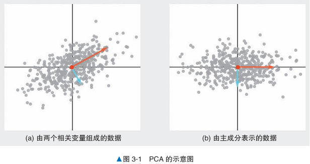
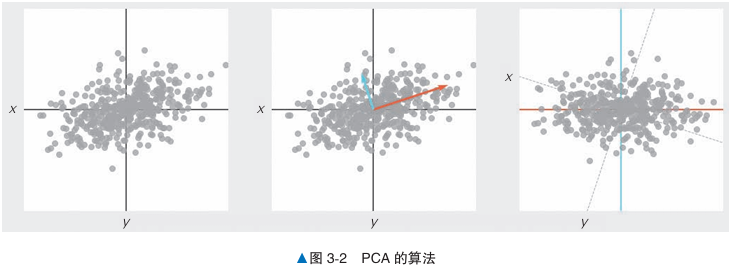
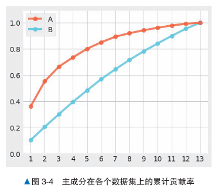

PCA#
概述#
是一种降维算法，可以将相关的多变量数据以主成分简洁地表现出来。
它对变量之间存在相关性的数据很有效。
对减少数据的方法：
只选择重要变量，舍弃其余变量
基于原变量构造新变量（PCA使用）
概念：#
降维：指在保留数据特征的前提下，以少量的变量表示有许多变量的数据，这有助于降低多变量数据分析的复杂度。
主成分：低维变量表示高维空间中的数据后，低维的轴叫作主成分
方向：对散点图使用PCA得到两个正交的向量，线的方向表示数据的方向
重要度：两个正交的向量，线的长度表示重要度（如下图）
主成分得分：图3-1b 是以这两条线为新轴对原始数据进行变换后得到的图形，变换后的数据称为主成分得分
第一（二）主成分：主成分轴的重要度的值从高到低排序。第一主成分包含了更多原始数据的特点。

算法说明：#
特征值问题#
是在线性代数中分析矩阵性质的重要问题，涉及找到矩阵的特征值和对应的特征向量
给定一个 \(( n \times n )\) 的方阵 ，特征值问题的目标是找到一个标量 λ 和一个非零向量 v，使得： \(A \mathbf{v} = \lambda \mathbf{v}\)
其中：
λ 是矩阵 A 的特征值。
v 是矩阵 A 的对应特征向量。
这表示矩阵 A 对特征向量 v 的作用只是将其放缩，而不改变其方向。特征值问题可以转换为以下形式： \((A - \lambda I) \mathbf{v} = 0\)
其中 I 是单位矩阵。要使这个方程有非零解 v，需要矩阵 \((A - \lambda I)\) 是奇异的，即它的行列式为零。因此，特征值 λ 满足以下特征方程： \(\det(A - \lambda I) = 0\)
解这个方程可以得到所有的特征值 λ，然后将这些值代入 \((A - \lambda I) \mathbf{v} = 0\) 可以得到对应的特征向量 v。
特征向量是指经过矩阵变换后不改变方向的向量，而特征值表示在这种变换下该向量的缩放比例。
步骤：#
计算协方差矩阵
对协方差矩阵求解特征值问题，求解特征向量和特征值
以数据表示各主成分方向

什么是协方差矩阵#
协方差矩阵表示了多维数据集中每对变量之间的协方差。协方差衡量两个变量的关系——如果两个变量的协方差为正，说明它们通常同向变化（一个增加时另一个也增加）；如果为负，说明它们反向变化；协方差为零表示两个变量之间没有线性关系。
假设有 n 个变量 \(X_1, X_2, \dots, X_n\)，它们组成一个随机向量 \(\mathbf{X} = [X_1, X_2, \dots, X_n]\)。协方差矩阵 Σ 的每个元素 \(\Sigma_{ij}\) 是变量 \(X_i\) 和 \(X_j\) 的协方差：
\(\Sigma_{ij} = \text{Cov}(X_i, X_j) = \mathbb{E}[(X_i - \mathbb{E}[X_i])(X_j - \mathbb{E}[X_j])]\)
协方差矩阵的大小是 \(n \times n\)，其中 n 是变量的数量。
如何计算协方差矩阵#
设我们有一个数据集，包含 m 个样本，每个样本有 n 个特征，可以用矩阵 X 表示该数据集，其中 X 的维度为 \(m \times n\)（行表示样本，列表示特征）。
计算每个变量的均值：首先对每个变量（列）计算均值向量 \(\mathbf{\mu}\)，其大小为 \(1 \times n\)。 \(\mathbf{\mu}j = \frac{1}{m} \sum{i=1}^{m} X_{ij}\)
去中心化数据：将每个样本减去对应变量的均值。生成一个新的矩阵 X’，其中 \(X'{ij} = X{ij} - \mathbf{\mu}_j\)。
计算协方差矩阵：协方差矩阵 Σ 通过以下公式计算： \(\Sigma = \frac{1}{m - 1} (X')^T X'\) 这里 \((X')^T\) 是去中心化数据的转置，乘积 \((X')^T X'\) 计算了每对变量之间的协方差。
这样得到的协方差矩阵 Σ 是一个 \(n \times n\) 对称矩阵。
在主成分分析（PCA）中，协方差矩阵 A 的特征值和特征向量用于提取数据的主要方向和重要性。
协方差矩阵：在 PCA 中，数据的协方差矩阵 AAA 描述了各个特征之间的相关性。这一矩阵的特征值和特征向量揭示了数据在各个方向上的变动程度。
特征值和特征向量：对协方差矩阵求解特征值问题，得到了一组特征值和对应的特征向量。排序后，每个特征向量按特征值大小表示一个主成分，即数据的主要变化方向。第一个特征向量对应于数据的最大变化方向（第一主成分），第二个特征向量对应次大的变化方向（第二主成分），以此类推。
贡献率：特征值的大小反映了每个主成分对数据的解释能力。通过计算每个特征值与特征值总和的比值（即贡献率），可以用百分比表示每个主成分的重要性，反映其对数据变异的解释能力。
累计贡献率：按主成分的重要性顺序将贡献率累加，可以得到累计贡献率。一般在 PCA 中选择累计贡献率达到某个阈值（如 90% 或 95%）的主成分数量，以确保在降低维度的同时尽可能多地保留数据的信息。
示例代码#
from sklearn.decomposition import PCA
from sklearn.datasets import load_iris
data = load_iris()
n_components = 2 # 将减少后的维度设置为2
model = PCA(n_components=n_components)
model = model.fit(data.data)
print(model.transform(data.data)) # 变换后的数据
详细说明#
主成分的选择方法#
对于主成分，先设定一个基准值，当前几累积主成分的贡献值达到基准值，就可以决定要选择主成分的数量。
对于下图，纵轴是累计主成分，横轴是主成分数据数量。
A数据的数据相关性较强，出现曲线机制。
B数据的数据相关性较弱，多个主成分的贡献值一致，不适合使用PCA进行降维。
